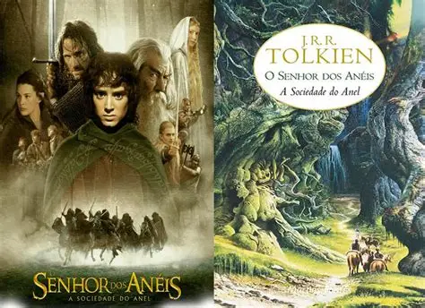

Quando os livros chegam ao cinema
Diversos livros clássicos já ganharam adaptações cinematográficas ao longo dos anos, transformando-se em
sucessos de bilheteria.
Exemplos
Em muitos casos, os filmes servem como porta de entrada para novos leitores e incentivam o interesse
pela literatura. Entretanto, essas adaptações frequentemente geram debates, pois alterações na história,
personagens ou finais acabam diferenciando significativamente dos livros.

Grandes sucessos de bilheteria
Algumas adaptações literárias arrecadaram bilhões de dólares,batendo recordes e conquistando fãs. Por
exemplo, a saga "Harry Potter" arrecadou mais de 7,7 bilhões de dólares, enquanto "O Senhor dos Anéis"
ultrapassou 5,8 bilhões.
Essas obras se destacaram não apenas pelo sucesso financeiro, mas também por seus universos ricos e
imersivos com personagens complexos. Fazendo com que o público se identificasse e conectasse com as
histórias de cada personagem.
Como acontece uma adaptação?
Transformar um livro em filme não é tão simples. Muitas vezes é necessário cortar cenas, mudar diálogos
e adaptar partes da história para o tempo do cinema.
- Seleção do livro: O produtor identifica uma obra com potencial de alcançar
audiência.
- Adaptação do roteiro: Roteiristas trabalham juntamente com diretores e autores para
passar a história para o formato cinematográfico.
- Produção e lançamento: O filme é gravado, editado e lançado, muitas vezes com
marketing que destacam tanto o livro quanto o filme.
Harry Potter: um dos maiores exemplos
A saga criada por J.K. Rowling se tornou uma das franquias mais famosas. Os livros conquistaram milhões
de leitores e os filmes fizeram enorme sucesso nos cinemas.
Muitas pessoas conheceram a história pelo filme e foram motivadas a ler os livros. Isso demonstra o poder das adaptações em atrair novos leitores e expandir o alcance de uma obra.
👇 Clique no link abaixo para conhecer mais sobre Harry Potter
Harry Potter Filmes e Livros: Diferenças e Semelhanças da Saga